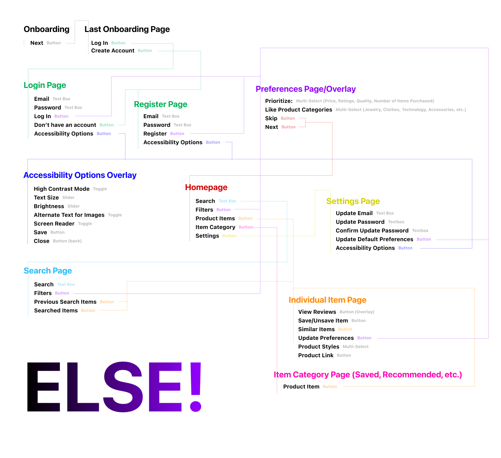
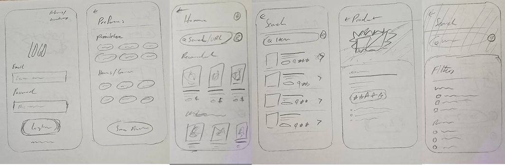

COMPETITIVE
ANALYSIS
Other website or apps that find shopping alternatives either only compare specific products, don’t actually search for better alternatives, or have no easy access to commonly viewed information.

ELSE!
A mobile application for finding online shopping alternatives based on selected preferences.
PROJECT OVERVIEW
ELSE! is a mobile app that helps users find alternatives to products they find online. They can choose preferences that they value most (such as price or reviews), and would display to the user an ELSE! score, a number out of 100 that displays how well the product matches with other products according to the user-selected preferences. I conducted end-to-end UX research and design, from interviews and competitive analysis a high fidelity Figma prototype.
Problem : Online shoppers need a reliable way to search for alternative similar products based on preferences they select. Current options either fail to customize results based on preferences or don’t compare similar items, making it difficult for users to efficiently choose a product to purchase that aligns with their priorities.
Goal : Quicken the process of decision-making for products that users purchase online in a way that meets their needs.
This project was conducted as the University of North Carolina at Chapel Hill App Team Carolina UI/UX Apprenticeship final project.
ROLE
Solo UX Designer
TIMELINE
March - April 2025 (1 month)
TOOLS
Figma, Notion, Pencil + Paper
COMPETITIVE
ANALYSIS
Other website or apps that find shopping alternatives either only compare specific products, don’t actually search for better alternatives, or have no easy access to commonly viewed information.
Research
I conducted 3 user interviews of different demographics, looking at what kinds of factors they look for when shopping, what frustrated them about trying to choose a product to buy, and what they found easy. From this information, I crafted two user personas to capture their needs and expectations. Based on the user needs and expectations, I created a feature list that included all the pages along with every feature that would be included on the app.
Feature List
Register
Login
Onboarding:
- Information about the app
- Select preferences
- Prioritize (price, quality, number of items bought, reviews, shipping time)
- Types of products you search for (jewelry, clothes, accessories, etc.)
Home
- Search
- Recommended items
- Best deals
- Saved Items
Search
- Previous searches
- List of items that fit it
- Filters (prioritization) (acts as sort) + which website (amazon, ebay, etc.)
Individual item page
- Item name
- Reviews
- Price
- ELSE! score: custom rating that balances based on priorities preferences
Items of the same brand that are better in terms of quality or price or both (Fixed tab that shows price and quality while scrolling)
Settings
- Update email/password
- Update default preferences
- Accessibility options
Saved/Recommended/Best Deals Items
- Individual item
Information
Architecture Map
This information architecture map of the site was created based on the feature list, which I used to develop this layout.
SKETCHES + WIREFRAMES

Simple register screen that prioritizes large inputs and button placement.
Detailed product page with image, description, ratings, styles, and suggested products below.
Post-login/register onboarding screen where users select shopping preferences to personalize recommendations and lists.
Home screen includes all navigation to other features like the search, preferences, settings/accessibility, and products.
Search page displays a list of all products where user can choose preferences and sort by category.
Style Guide +
Components

High-Fidelity Prototypes
Simple register screen that prioritizes large inputs and button placement.
Detailed product page with image, description, ratings, styles, and suggested products below.

Post-login/register onboarding screen where users select shopping preferences to personalize recommendations and lists.
Home screen includes all navigation to other features like the search, preferences, settings/accessibility, and products.
Search page displays a list of all products where user can choose preferences and sort by category.
Results
- Researched, designed, and prototyped an original mobile app concept from scratch, completing the full end-to-end UX process independently
- Competitive analysis and user research uncovered a key need: users wanted shopping results tailored to their preferences and the ability to compare similar products easily
- Presented the final prototype at the App Team Carolina banquet showcase to 30+ attendees, where it was praised for being well-designed and intuitive
- Awarded “Most Useful App” among all UI/UX Apprenticeship projects at the event
Reflection
- This was the first time I completed the full UX process—from initial idea to final prototype—entirely on my own. It taught me how to structure my decisions and stay grounded in user needs.
- Designing features based on real interviews helped me understand what user-centered design really looks like in practice, not just in theory or based off of what simply looks good.
- It was also my first time building a fully functional and interactable Figma prototype, showing me the helpfulness of prototyping—not just for feedback, but for helping users imagine what the final product would be without yet going through development.